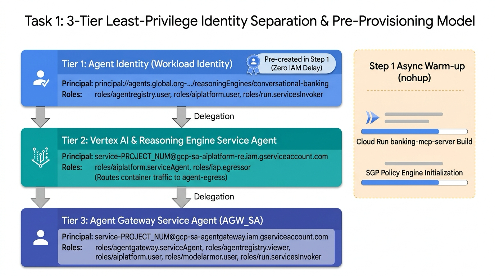
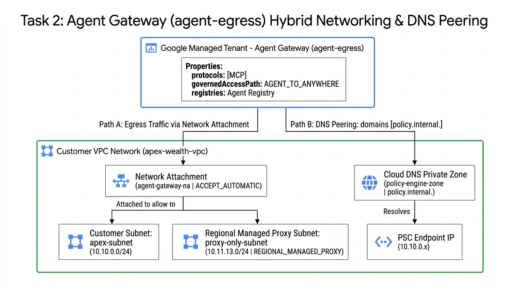
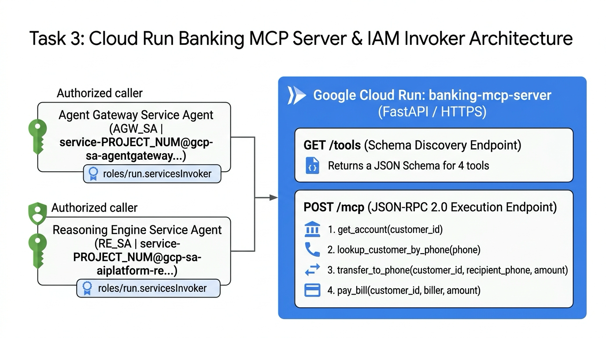
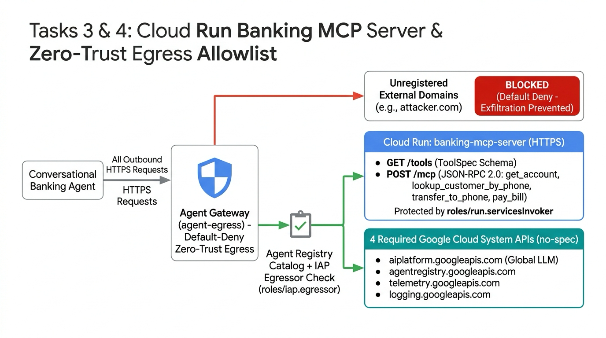
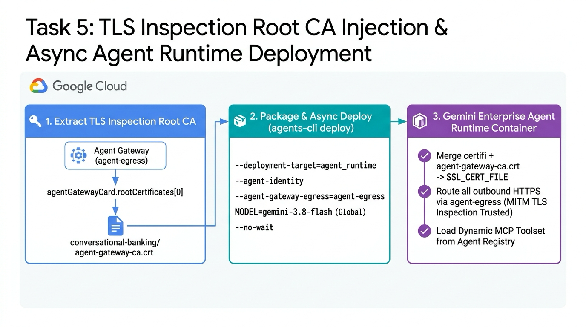
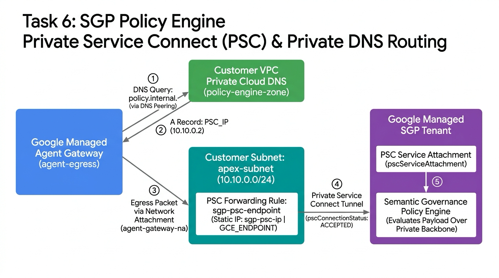
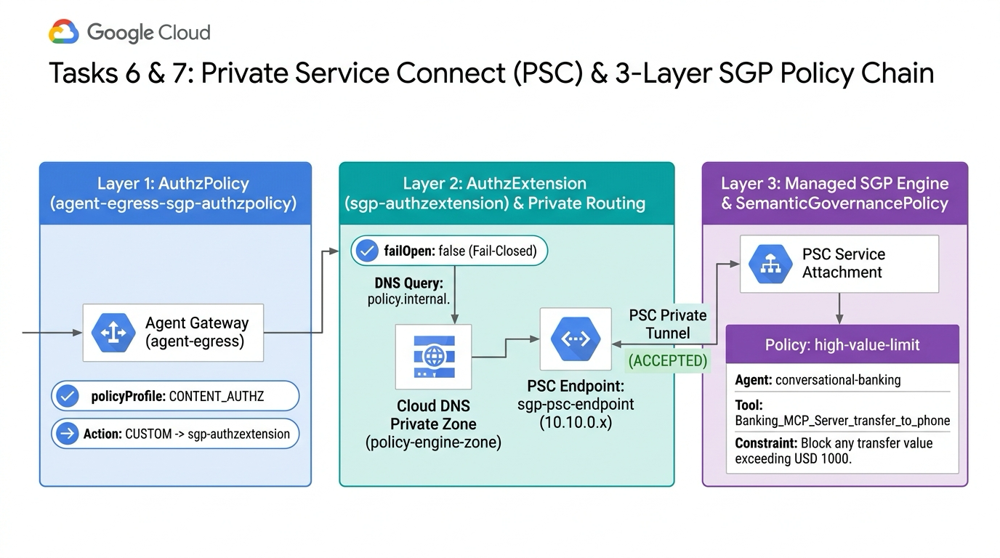
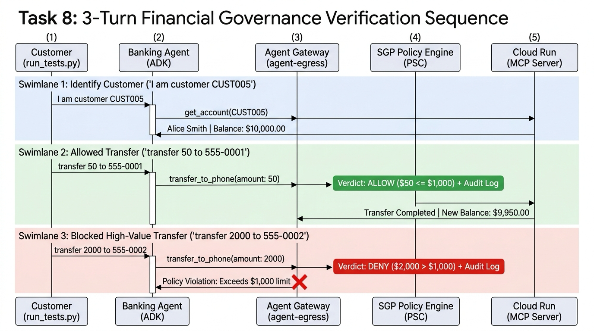

개요: 에이펙스 자산운용의 자율형 AI 에이전트 보안 거버넌스
대규모 언어 모델(LLM) 기반의 자율형 AI 에이전트는 스스로 추론하고 워크플로를 오케스트레이션하며, 계좌 이체 API나 핵심 원장 데이터베이스 같은 엔터프라이즈 백엔드 도구를 직접 호출할 수 있습니다. 하지만 에이전트에게 백엔드 시스템에 대한 직접적인 네트워크 접근 권한을 부여하면 프롬프트 인젝션(Prompt Injection), 모델 환각(Hallucination), 비인가 고액 거래로 인한 심각한 보안 및 금융 컴플라이언스 리스크가 발생합니다.
또한 전통적인 IAM 권한 제어만으로는 "누가(어떤 서비스 계정이) 호출했는가"만 확인할 수 있을 뿐, "얼마를 어떤 맥락으로 이체하려 하는가"와 같은 페이로드 내부의 비즈니스 의미를 통제할 수 없으며, 에이전트 내부의 시스템 프롬프트 지시만으로는 우회 공격을 100% 막기 어렵습니다.
금융사인 에이펙스 자산운용은 고객이 대화만으로 간편 송금과 계좌 관리를 수행할 수 있도록
Gemini Enterprise Agent Runtime 기반의 대화형 뱅킹 에이전트(gemini-3.8-flash, Global 엔드포인트)를 도입했습니다.
금융보안 및 준법감시팀은 보이스피싱 및 고액 오송금 사고를 예방하기 위해, 에이전트 애플리케이션 코드를 수정하지 않고도
"1회 이체 금액이 100만 원(1,000 USD / amount <= 1000.0)을 초과하는 모든 송금 요청을 네트워크 경계에서 즉시 차단"하고 Cloud Logging에 감사 로그를 남기는 제로 트러스트 아키텍처를 구축하고자 합니다.
전체 시스템 아키텍처 및 트래픽 흐름 (3-Plane 분리 구조)
아래 아키텍처 다이어그램은 본 가이드에서 구축할 3개의 아키텍처 플레인(**Plane 1**: Gemini Enterprise 에이전트 런타임 환경, **Plane 2**: 고객 프로젝트 VPC 및 제어 플레인, **Plane 3**: Google 관리형 SGP 정책 평가 테넌트) 간의 상호작용과 5단계 트래픽 흐름을 보여줍니다.

| 트래픽 흐름 단계 | 구성 요소 | 역할 및 상세 동작 |
|---|---|---|
| 1. 사용자 요청 | 금융 고객 김민준 (CUST005) ➔ Gemini Enterprise 에이전트 |
3-Turn 대화형 금융 요청 전달 (gemini-3.8-flash, Global API 엔드포인트 사용) |
| 2. 호출 가로채기 | Gemini Enterprise 에이전트 ➔ Agent Gateway (agent-egress) |
아웃바운드 MCP 도구 호출(JSON-RPC 2.0)을 네트워크 경계에서 가로채기 및 TLS Inspection 복호화 |
| 3. 카탈로그 검증 | Agent Registry ↔ Agent Gateway | 허가된 MCP 도구 스키마(toolspec.json) 및 시스템 API Allowlist 확인 (roles/iap.egressor 검증) |
| 4. 정책 심사 (PSC) | Agent Gateway ➔ SGP 정책 엔진 (policy.internal.) |
Private Service Connect(PSC) 사설망을 통해 1회 이체 한도(100만 원 / USD 1000) 초과 여부 실시간 심사 |
| 5. 백엔드 실행 및 감사 | Agent Gateway ➔ Cloud Run (banking-mcp-server) |
ALLOW 판정 시에만 Cloud Run MCP 서버로 전달, DENY 시 즉시 차단 및 Cloud Logging에 감사 로그 기록 |
Gemini Enterprise Agent Runtime 컨테이너 빌드 및 샌드박스 프로비저닝은 백엔드에서 약 6~10분이 소요됩니다.
전체 구축 시간을 단축하기 위해 Step 2에서 에이전트 고유 ID(AGENT_PRINCIPAL)를 선행 발급하여 IAM 권한을 미리 부여하고,
선행 리소스(agent-egress 게이트웨이 및 MCP 도구 카탈로그 등록)가 준비된 Step 6에서 에이전트 배포를 비동기(--no-wait)로 시작합니다.
컨테이너가 백그라운드에서 빌드되는 동안 Step 7(SGP PSC 네트워킹 및 DNS 구성)과 Step 8(인가 확장 및 SGP 정책 생성)을 병렬로 진행합니다.
한눈에 보는 단계별 구축 로드맵 (Step 1 ~ Step 9)
| 단계 | 구축 영역 | 핵심 생성 리소스 및 주요 CLI 작업 | 소요 시간 | 실무 체크포인트 |
|---|---|---|---|---|
| Step 1 | 시나리오 및 아키텍처 | 에이펙스 자산운용 시나리오 및 3-Plane 거버넌스 구조 이해 | 5분 | 네트워크 경계 기반 정책 통제 원리 파악 |
| Step 2 | API 활성화 및 3-계층 IAM | 19종 필수 API 활성화, 서비스 에이전트 생성, AGENT_PRINCIPAL 선행 발급 및 권한 부여 |
10분 | roles/agentgateway.serviceAgent 및 principal://... 확인 |
| Step 3 | VPC · 서브넷 · DNS · 게이트웨이 | apex-wealth-vpc, apex-subnet, proxy-only-subnet, policy-engine-zone, agent-egress 생성 |
8분 | AGENT_TO_ANYWHERE 게이트웨이 및 DNS 피어링 구성 |
| Step 4 | 뱅킹 MCP 서버 배포 | Cloud Run에 banking-mcp-server 빌드·배포 및 roles/run.servicesInvoker 부여 |
5분 | 4대 뱅킹 도구 스키마(/tools) 응답 및 Invoker 인가 |
| Step 5 | Agent Registry 카탈로그 등록 | toolspec.json 추출, MCP 서버 및 4대 시스템 API 등록, roles/iap.egressor 부여 |
5분 | Global API 포함 5개 서비스 등록 및 IAP Egressor 바인딩 |
| Step 6 | 🚀 에이전트 비동기 배포 | TLS Inspection Root CA(agent-gateway-ca.crt) 추출 및 agents-cli deploy --no-wait 실행 |
4분 (백그라운드) | --no-wait 배포 시작 후 즉시 Step 7 진행 |
| Step 7 | (병렬 1) SGP · 고정 IP · PSC · DNS | SGP 엔진 활성화, 내부 고정 IP(sgp-psc-ip) 예약, sgp-psc-endpoint 및 DNS A 레코드 생성 |
5분 | PSC 연결 상태 ACCEPTED 및 policy.internal. 매핑 |
| Step 8 | (병렬 2) 인가 확장 및 SGP 정책 | sgp-authzextension, agent-egress-sgp-authzpolicy, high-value-limit($1,000 한도) 생성 |
5분 | 에이전트 등록 확인 후 Banking_MCP_Server_transfer_to_phone 통제 |
| Step 9 | 3-Turn 검증 · 감사 로그 · 정리 | 3-Turn 연속 시나리오 실행, Cloud Logging 감사 로그(verdict) 심층 분석 및 리소스 정리 |
8분 | 소액 이체 ALLOW / 고액 이체 DENY 및 감사 로그 검증 |
사전 준비 사항 체크리스트
구축을 진행하는 엔지니어 계정에는 대상 GCP 프로젝트의 roles/owner(소유자) 권한, 또는 최소 다음 권한 조합이 필요합니다:
• roles/resourcemanager.projectIamAdmin
• roles/serviceusage.serviceUsageAdmin
• roles/compute.networkAdmin & roles/dns.admin
• roles/run.admin & roles/aiplatform.admin
• roles/iap.admin & roles/agentregistry.admin
Google Cloud Shell(권장) 또는 gcloud CLI(최신 버전, alpha/beta 컴포넌트 포함), python3(3.10+), curl, git이 설치된 리눅스/macOS 터미널에서 실행할 수 있습니다.
대상 리전은 us-central1을 기준으로 안내합니다.
환경 변수 설정, 필수 API 19종 활성화 및 3-계층 IAM 권한 분리
엔터프라이즈 에이전트 보안 거버넌스 아키텍처에서는 단일 서비스 계정에 과도한 권한을 몰아주는 대신, 게이트웨이 · 런타임 플랫폼 · 에이전트 실행 주체의 ID를 3계층으로 분리하여 최소 권한(Least Privilege)을 부여합니다. 이 단계에서는 실습 코드 리포지토리와 CLI 도구를 준비하고, 19개 필수 API 활성화와 3-계층 IAM 구성을 차례대로 수행합니다.

3-계층 보안 주체(Principal) 역할 및 권한 비교
| 계층 구분 | 주체 (Principal / Service Account) | 핵심 역할 및 부여되는 IAM 권한 |
|---|---|---|
| Tier 1 Agent Gateway SA ( AGW_SA) |
service-${PROJECT_NUM}@gcp-sa-agentgateway.iam.gserviceaccount.com |
에이전트의 아웃바운드 트래픽을 중계(roles/agentgateway.serviceAgent)하고, Agent Registry 카탈로그 조회(roles/agentregistry.viewer), SGP 정책 엔진 추론(roles/aiplatform.user) 및 가드레일(roles/modelarmor.user) 심사를 수행합니다. |
| Tier 2 Vertex AI & Runtime SA ( RE_SA) |
service-${PROJECT_NUM}@gcp-sa-aiplatform.iam.gserviceaccount.comservice-${PROJECT_NUM}@gcp-sa-aiplatform-re.iam.gserviceaccount.com |
Gemini Enterprise Agent Runtime 샌드박스를 생성하고 런타임의 아웃바운드 경로에 agent-egress 게이트웨이를 마운트(roles/aiplatform.serviceAgent)하며, Agent Registry 조회(roles/agentregistry.viewer)를 수행합니다. |
| Tier 3 에이전트 고유 ID ( Agent Identity) |
principal://agents.global.org-.../reasoningEngines/... |
범용 서비스 계정 대신 conversational-banking 에이전트 인스턴스에만 발급되는 암호학적 고유 ID로, 허가된 도구 조회/사용(roles/agentregistry.user), 모델 추론(roles/aiplatform.user), 로그/메트릭 기록 권한만 가집니다. |
2-1. GCP 프로젝트 확인, 리포지토리 클론 및 CLI 도구(uv · agents-cli) 설치
현재 로그인된 계정과 프로젝트 ID를 확인한 뒤, 홈 디렉터리(~/agent-gateway-sgp)에 실습 코드 리포지토리를 복제하고 Gemini Enterprise Agent Runtime 패키징 도구인 uv와 google-agents-cli를 설치합니다.
gcloud auth list
gcloud config list project
# 만약 프로젝트가 설정되어 있지 않다면 대상 프로젝트 ID를 지정합니다:
# gcloud config set project YOUR_PROJECT_ID
cd ~
git clone https://github.com/wxdxh/agent-gateway-sgp.git ~/agent-gateway-sgp
cd ~/agent-gateway-sgp
# uv 및 google-agents-cli 설치
curl -LsSf https://astral.sh/uv/install.sh | sh
export PATH="$HOME/.local/bin:$PATH"
echo 'export PATH="$HOME/.local/bin:$PATH"' >> ~/.bashrc
uv tool install google-agents-cli
agents-cli --version2-2. 공통 환경 변수 설정 파일 (customer-env.sh) 생성 및 로드
이후 모든 단계에서 공통으로 참조할 프로젝트 메타데이터와 네트워크 이름, 서비스 에이전트 식별자를 ~/agent-gateway-sgp/customer-env.sh 파일에 저장하고 현재 셸 세션에 로드합니다.
export PROJECT_ID="$(gcloud config get-value project)"
export PROJECT_NUM="$(gcloud projects describe "${PROJECT_ID}" --format="value(projectNumber)")"
export LOCATION="us-central1"
export NETWORK_NAME="apex-wealth-vpc"
export SUBNET_NAME="apex-subnet"
export PROXY_SUBNET_NAME="proxy-only-subnet"
export AGW_SA="serviceAccount:service-${PROJECT_NUM}@gcp-sa-agentgateway.iam.gserviceaccount.com"
export RE_SA="serviceAccount:service-${PROJECT_NUM}@gcp-sa-aiplatform-re.iam.gserviceaccount.com"
cat <<EOF > ~/agent-gateway-sgp/customer-env.sh
export PATH="\$HOME/.local/bin:\$PATH"
export PROJECT_ID="${PROJECT_ID}"
export PROJECT_NUM="${PROJECT_NUM}"
export LOCATION="${LOCATION}"
export NETWORK_NAME="${NETWORK_NAME}"
export SUBNET_NAME="${SUBNET_NAME}"
export PROXY_SUBNET_NAME="${PROXY_SUBNET_NAME}"
export AGW_SA="${AGW_SA}"
export RE_SA="${RE_SA}"
EOF
source ~/agent-gateway-sgp/customer-env.sh
echo "Project ID: ${PROJECT_ID}"
echo "Project Number: ${PROJECT_NUM}"
echo "Location: ${LOCATION}"
echo "VPC Network: ${NETWORK_NAME} (${SUBNET_NAME})"
echo "Agent GW SA: ${AGW_SA}"| 환경 변수 | 설정값 예시 | 아키텍처상의 역할 |
|---|---|---|
PROJECT_ID / PROJECT_NUM |
my-project-id / 1080321871308 |
리소스가 배포될 프로젝트 ID와, 관리형 서비스 에이전트 이메일 및 AuthzPolicy 리소스 경로 구성에 사용되는 고유 프로젝트 번호입니다. |
NETWORK_NAME / SUBNET_NAME |
apex-wealth-vpc / apex-subnet |
Step 3에서 생성할 커스텀 VPC와 Network Attachment 및 SGP PSC 엔드포인트가 배치될 워크로드 서브넷(10.10.0.0/24)입니다. |
LOCATION |
us-central1 |
Agent Gateway, Agent Registry, Cloud Run, SGP 정책 엔진이 배포될 리전입니다. (단, Gemini 모델 추론은 Global 엔드포인트를 사용합니다.) |
AGW_SA |
serviceAccount:service-${PROJECT_NUM}@gcp-sa-agentgateway... |
networkservices.googleapis.com API를 통해 생성되는 Agent Gateway 전용 Google 관리형 서비스 에이전트입니다. |
2-3. 필수 Google Cloud API 19종 활성화
Agent Gateway(networkservices), AuthzPolicy(networksecurity), Agent Registry(agentregistry), Agent Identity(agentidentity), Service Extensions(serviceextensions), IAP Egress 제어(iap), Cloud Run, Cloud Build, Cloud DNS 등 거버넌스 스택을 구성하는 19개 API를 활성화합니다.
gcloud services enable \
compute.googleapis.com \
networksecurity.googleapis.com \
networkservices.googleapis.com \
dns.googleapis.com \
iam.googleapis.com \
iap.googleapis.com \
agentregistry.googleapis.com \
aiplatform.googleapis.com \
run.googleapis.com \
cloudbuild.googleapis.com \
artifactregistry.googleapis.com \
storage.googleapis.com \
modelarmor.googleapis.com \
telemetry.googleapis.com \
cloudtrace.googleapis.com \
logging.googleapis.com \
cloudapiregistry.googleapis.com \
agentidentity.googleapis.com \
serviceextensions.googleapis.com \
--project="${PROJECT_ID}"2-4. Google 관리형 서비스 에이전트 프로비저닝 및 IAM 역할 바인딩
gcloud beta services identity create 명령으로 프로젝트 전용 Google 관리형 서비스 에이전트를 프로비저닝(Identity Provisioning)하고,
컨테이너 빌드를 담당하는 기본 컴퓨트 서비스 계정, Vertex AI 서비스 에이전트(RE_SA), 그리고 Agent Gateway 서비스 에이전트(AGW_SA)에 최소 권한을 부여합니다.
# 1. Network Services 및 Vertex AI 관리형 서비스 에이전트 생성
gcloud beta services identity create \
--service=networkservices.googleapis.com \
--project="${PROJECT_ID}" || true
gcloud beta services identity create \
--service=aiplatform.googleapis.com \
--project="${PROJECT_ID}" || true
# 2. 기본 컴퓨트 서비스 계정 (Cloud Run 소스 빌드 및 아티팩트 저장 권한)
for ROLE in \
"roles/cloudbuild.builds.builder" \
"roles/storage.admin" \
"roles/artifactregistry.writer"; do
gcloud projects add-iam-policy-binding "${PROJECT_ID}" \
--member="serviceAccount:${PROJECT_NUM}-compute@developer.gserviceaccount.com" \
--role="${ROLE}" \
--condition=None \
--quiet >/dev/null
done
# 3. Vertex AI 및 Reasoning Engine 서비스 에이전트 권한 부여
for SA in \
"serviceAccount:service-${PROJECT_NUM}@gcp-sa-aiplatform.iam.gserviceaccount.com" \
"${RE_SA}"; do
for ROLE in "roles/aiplatform.serviceAgent" "roles/aiplatform.user" "roles/agentregistry.viewer"; do
gcloud projects add-iam-policy-binding "${PROJECT_ID}" \
--member="${SA}" \
--role="${ROLE}" \
--condition=None \
--quiet >/dev/null 2>&1 || true
done
done
# 4. Agent Gateway 서비스 에이전트(AGW_SA)에 4대 핵심 IAM 역할 부여
for ROLE in \
"roles/agentgateway.serviceAgent" \
"roles/aiplatform.user" \
"roles/modelarmor.user" \
"roles/agentregistry.viewer"; do
echo "Granting ${ROLE} to ${AGW_SA}..."
gcloud projects add-iam-policy-binding "${PROJECT_ID}" \
--member="${AGW_SA}" \
--role="${ROLE}" \
--condition=None \
--quiet >/dev/null
done2-5. 에이전트 고유 ID (AGENT_IDENTITY, principal://...) 선행 생성 및 사전 권한 바인딩
reasoningEngines REST API에 소스 코드 없이 {"identityType": "AGENT_IDENTITY"}만 지정하여 빈 Reasoning Engine 리소스를 먼저 생성합니다.
이렇게 하면 고유 ID(principal://agents.global.org-...)가 즉시 발급되어 IAM 권한을 미리 부여할 수 있으므로,
이후 Step 6에서 실제 에이전트 컨테이너를 배포(agents-cli deploy)할 때 글로벌 IAM 권한 전파 지연(Propagation Delay, 통상 1~2분)으로 인한 초기 부팅 실패를 원천 방지할 수 있습니다.
TOKEN="$(gcloud auth print-access-token)"
# 1. AGENT_IDENTITY 타입의 빈 conversational-banking Reasoning Engine 생성
curl -fsS -X POST \
"https://${LOCATION}-aiplatform.googleapis.com/v1beta1/projects/${PROJECT_ID}/locations/${LOCATION}/reasoningEngines" \
-H "Authorization: Bearer ${TOKEN}" \
-H "Content-Type: application/json" \
-d '{"displayName": "conversational-banking", "spec": {"identityType": "AGENT_IDENTITY"}}' >/dev/null 2>&1 || true
# 2. 발급된 effectiveIdentity(principal://...) 조회 및 customer-env.sh 저장
EFFECTIVE_ID=""
for i in {1..10}; do
sleep 3
EFFECTIVE_ID="$(curl -fsS -H "Authorization: Bearer ${TOKEN}" \
"https://${LOCATION}-aiplatform.googleapis.com/v1beta1/projects/${PROJECT_ID}/locations/${LOCATION}/reasoningEngines" 2>/dev/null | \
python3 -c 'import sys, json; engines=json.load(sys.stdin).get("reasoningEngines", []); matches=[e for e in engines if e.get("displayName")=="conversational-banking"]; print(matches[0].get("spec", {}).get("effectiveIdentity", "") if matches else "")' 2>/dev/null || true)"
if [[ -n "${EFFECTIVE_ID}" ]]; then
break
fi
echo "Waiting for effectiveIdentity provisioning... (${i}/10)"
done
export AGENT_PRINCIPAL="principal://${EFFECTIVE_ID}"
echo "export AGENT_PRINCIPAL=\"${AGENT_PRINCIPAL}\"" >> ~/agent-gateway-sgp/customer-env.sh
echo "Pre-provisioned Agent Identity: ${AGENT_PRINCIPAL}"
# 3. 발급된 AGENT_PRINCIPAL에 7대 런타임 최소 권한 사전 바인딩
for ROLE in \
"roles/agentregistry.viewer" \
"roles/agentregistry.user" \
"roles/aiplatform.user" \
"roles/serviceusage.serviceUsageConsumer" \
"roles/cloudapiregistry.viewer" \
"roles/logging.logWriter" \
"roles/monitoring.metricWriter"; do
gcloud projects add-iam-policy-binding "${PROJECT_ID}" \
--member="${AGENT_PRINCIPAL}" \
--role="${ROLE}" \
--condition=None \
--quiet >/dev/null 2>&1 || true
done2-6. Step 2 완료 확인: Agent Gateway 서비스 에이전트 IAM 검증
아래 명령어를 실행하여 AGW_SA에 에이전트 트래픽 중계 및 정책 심사에 필요한 4가지 핵심 IAM 역할이 정상적으로 바인딩되었는지 확인합니다.
gcloud projects get-iam-policy "${PROJECT_ID}" \
--flatten="bindings[].members" \
--filter="bindings.members:${AGW_SA}" \
--format="table(bindings.role)"
1. 부서별 에이전트 ID 분리: 사내에 여러 부서의 AI 에이전트(예: 대출 심사 에이전트, 자산 조회 에이전트, 외환 송금 에이전트)를 운영할 때 하나의 공용 서비스 계정을 공유하면 권한 남용 위험이 발생합니다. AGENT_IDENTITY를 사용하면 에이전트마다 독립된 principal://... 주체가 부여되므로 에이전트 단위의 세밀한 최소 권한 통제가 가능합니다.
2. 보안 승인과 코드 배포의 분리(Decoupling): 실제 기업 환경의 CI/CD 파이프라인에서도 인프라 배포 단계에서 빈 Reasoning Engine(identityType: AGENT_IDENTITY)과 IAM 바인딩을 먼저 생성해 두고, 애플리케이션 배포 단계(GitHub Actions / Cloud Build)에서 agents-cli deploy로 코드만 업데이트하면 보안팀의 IAM 승인 절차와 개발팀의 배포 주기를 깔끔하게 분리할 수 있습니다.
Agent Gateway 네트워크 기반 구축 및 agent-egress 게이트웨이 배포
이 단계에서는 Gemini Enterprise Agent Runtime에서 외부 MCP 서버 및 시스템 API로 나가는 아웃바운드 트래픽을 통제하는 Agent Gateway(agent-egress)를 구성합니다.
Agent Gateway는 Google이 관리하는 테넌트 프로젝트에서 실행되는 관리형 Envoy 기반 보안 프록시입니다.
따라서 이 게이트웨이가 고객의 프라이빗 VPC(apex-wealth-vpc) 내부에 있는 SGP 정책 엔진(policy.internal.)과 통신하려면
아래 다이어그램과 같이 ① 커스텀 VPC 및 워크로드 서브넷(apex-subnet), ② 리전 관리형 프록시 전용 서브넷(proxy-only-subnet), ③ 프라이빗 Cloud DNS 영역(policy-engine-zone), ④ Network Attachment(agent-gateway-na)의 4가지 네트워크 브리지 요소가 필요합니다.

3-1. 커스텀 VPC (apex-wealth-vpc) 및 워크로드 서브넷 (apex-subnet) 생성
에이전트 네트워크 연결점과 SGP PSC 엔드포인트가 배치될 전용 커스텀 VPC(apex-wealth-vpc)와 리전 서브넷(apex-subnet, 10.10.0.0/24)을 생성합니다.
cd ~/agent-gateway-sgp
source customer-env.sh
gcloud compute networks create "${NETWORK_NAME}" \
--subnet-mode=custom \
--project="${PROJECT_ID}" || true
gcloud compute networks subnets create "${SUBNET_NAME}" \
--network="${NETWORK_NAME}" \
--region="${LOCATION}" \
--range="10.10.0.0/24" \
--project="${PROJECT_ID}" || true3-2. 리전 관리형 프록시 전용 서브넷 (proxy-only-subnet) 및 프라이빗 DNS 영역 생성
Agent Gateway 내부 Envoy 프록시 인스턴스가 사용할 리전 관리형 프록시 전용 서브넷(proxy-only-subnet, 10.11.13.0/24, --purpose=REGIONAL_MANAGED_PROXY)과
DNS 피어링용 프라이빗 Cloud DNS 영역(policy-engine-zone, policy.internal.)을 생성합니다.
gcloud compute networks subnets create "${PROXY_SUBNET_NAME}" \
--network="${NETWORK_NAME}" \
--region="${LOCATION}" \
--range="10.11.13.0/24" \
--purpose=REGIONAL_MANAGED_PROXY \
--role=ACTIVE \
--project="${PROJECT_ID}" || true
gcloud dns managed-zones create policy-engine-zone \
--description="Private zone for internal SGP service" \
--dns-name="policy.internal." \
--visibility=private \
--networks="${NETWORK_NAME}" \
--project="${PROJECT_ID}" || true3-3. Network Attachment (agent-gateway-na) 생성
Google 관리형 테넌트 프로젝트에서 실행되는 Agent Gateway가 apex-subnet 내부로 이그레스 트래픽을 전달할 수 있도록 ACCEPT_AUTOMATIC 연결 모드의 Network Attachment(agent-gateway-na)를 생성합니다.
gcloud compute network-attachments create agent-gateway-na \
--region="${LOCATION}" \
--subnets="${SUBNET_NAME}" \
--connection-preference=ACCEPT_AUTOMATIC \
--project="${PROJECT_ID}" || true3-4. agent-egress 게이트웨이 매니페스트 작성 및 설정 항목 해설
AGENT_TO_ANYWHERE 거버넌스 경로, Agent Registry 연동, Network Attachment 및 policy.internal. 도메인에 대한 DNS 피어링 설정이 포함된 agent-gateway-vpc-egress.yaml 파일을 작성합니다.
cat > ~/agent-gateway-sgp/agent-gateway-vpc-egress.yaml <<EOF
name: projects/${PROJECT_ID}/locations/${LOCATION}/agentGateways/agent-egress
protocols:
- MCP
googleManaged:
governedAccessPath: AGENT_TO_ANYWHERE
registries:
- //agentregistry.googleapis.com/projects/${PROJECT_ID}/locations/${LOCATION}
networkConfig:
egress:
networkAttachment: projects/${PROJECT_ID}/regions/${LOCATION}/networkAttachments/agent-gateway-na
dnsPeeringConfig:
domains:
- policy.internal.
targetProject: ${PROJECT_ID}
targetNetwork: projects/${PROJECT_ID}/global/networks/${NETWORK_NAME}
EOFagent-gateway-vpc-egress.yaml 주요 설정 항목 상세 해설
| 필드 경로 | 설정값 | 아키텍처 역할 및 상세 설명 |
|---|---|---|
protocols |
[MCP] |
게이트웨이가 Model Context Protocol(JSON-RPC 2.0) 메시지 구조를 파싱하여 도구 이름(method)과 인자(arguments)를 추출하도록 지정합니다. |
googleManaged.governedAccessPath |
AGENT_TO_ANYWHERE |
아웃바운드(Egress) 거버넌스 모드입니다. 에이전트에서 외부(Cloud Run, SaaS, 온프레미스 API 등)로 나가는 호출을 통제합니다. (반대로 외부에서 에이전트로 들어오는 인바운드 호출을 통제할 때는 ANYWHERE_TO_AGENT를 사용합니다.) |
registries |
//agentregistry.googleapis.com/... |
게이트웨이가 참조할 신뢰할 수 있는 서비스/도구 카탈로그(Agent Registry)의 리소스 경로입니다. 여기에 등록되지 않은 목적지는 기본 차단(Default Deny)됩니다. |
networkConfig.egress.networkAttachment |
.../networkAttachments/agent-gateway-na |
관리형 게이트웨이가 고객 VPC 내부 리소스(예: PSC 엔드포인트, 내부 ALB, 온프레미스 VPN/Interconnect)로 패킷을 내보낼 때 사용할 네트워크 연결점입니다. |
networkConfig.dnsPeeringConfig |
domains: [policy.internal.] |
게이트웨이가 policy.internal. 도메인의 IP를 찾을 때 퍼블릭 인터넷 DNS가 아닌 고객 VPC(apex-wealth-vpc)의 프라이빗 Cloud DNS에 질의하도록 DNS 피어링을 설정합니다. |
3-5. agent-egress 게이트웨이 임포트 및 상태 확인
agent-egress 게이트웨이 임포트 시 Google 관리형 보안 프록시 인스턴스 할당, TLS Inspection용 자체 Root CA 인증서 동적 발급, 그리고 VPC 네트워크 어태치먼트(agent-gateway-na) 및 DNS 피어링 바인딩이 백엔드에서 프로비저닝되므로 완료까지 약 3~5분이 소요됩니다. 명령어가 완료될 때까지 잠시 기다려 주세요.
gcloud network-services agent-gateways import agent-egress \
--source="$HOME/agent-gateway-sgp/agent-gateway-vpc-egress.yaml" \
--location="${LOCATION}" \
--project="${PROJECT_ID}"
# 배포된 agent-egress 게이트웨이의 상세 구성 및 발급된 Root CA 확인
gcloud network-services agent-gateways describe agent-egress \
--location="${LOCATION}" \
--project="${PROJECT_ID}" \
--format="yaml(name,googleManaged,networkConfig,agentGatewayCard)"
1. 프록시 전용 서브넷 크기: 프로덕션 환경에서는 리전당 최소 /24(256개 IP) 또는 트래픽 규모에 따라 /23(512개 IP) 크기의 REGIONAL_MANAGED_PROXY 서브넷을 할당하는 것이 권장됩니다.
2. Shared VPC(공유 VPC) 환경: 중앙 네트워크 호스트 프로젝트(Host Project)에 VPC가 있고 서비스 프로젝트(Service Project)에 에이전트를 배포하는 경우, 호스트 프로젝트의 서브넷에 agent-gateway-na를 생성하고 --connection-preference=ACCEPT_MANUAL 및 --producer-accept-list를 사용하여 허가된 서비스 프로젝트의 Agent Gateway만 연결되도록 엄격히 통제할 수 있습니다.
Cloud Run에 에이펙스 자산운용 뱅킹 MCP 서버 배포 및 권한 설정
이 단계에서는 에이펙스 자산운용의 코어 뱅킹 백엔드 역할을 하는 Model Context Protocol (MCP) 서버(banking-mcp-server)를 Google Cloud Run에 배포하고 호출 권한을 구성합니다.
banking-mcp-server/server.py는 FastAPI 기반으로 구현되어 있으며 다음 2가지 엔드포인트를 제공합니다:
GET /tools: 서버가 제공하는 4가지 뱅킹 도구의 이름, 설명, JSON Schema 입력 파라미터 명세를 반환합니다 (Agent Registry 카탈로그 등록용).POST /mcp: 에이전트가 Agent Gateway를 통해 전송하는 표준 MCP JSON-RPC 2.0 요청(tools/list,tools/call)을 처리하고 원장 거래 결과를 반환합니다.

뱅킹 MCP 서버 제공 도구 명세 (4종)
| 도구 식별자 | 입력 파라미터 | 비즈니스 동작 (에이펙스 자산운용 원장) |
|---|---|---|
| get_account | customer_id |
고객(예: CUST005)의 계좌(ACT-1005) 정보 및 현재 잔액($10,000.00) 조회 |
| lookup_customer_by_phone | phone |
수취인 전화번호로 등록된 고객 성명 및 계좌 상태 확인 |
| transfer_to_phone | customer_id, target_phone, amount |
[SGP 통제 대상] 전화번호 기반 간편 송금 실행 및 거래 고유번호(TXN-...) 발급 |
| pay_bill | customer_id, biller_name, account_number, amount |
기관·가맹점 청구서 납부 및 계좌 잔액 차감 |
4-1. (선택) 로컬 단위 테스트 및 Cloud Run에 banking-mcp-server 빌드·배포
banking-mcp-server/ 디렉터리의 소스 코드를 Cloud Build로 컨테이너화하여 Cloud Run 서비스로 배포합니다.
cd ~/agent-gateway-sgp
source customer-env.sh
# (선택) 로컬에서 JSON-RPC 2.0 및 도구 동작 단위 테스트
python3 banking-mcp-server/test_server.py
# Cloud Run에 banking-mcp-server 빌드 및 배포
gcloud run deploy banking-mcp-server \
--source=./banking-mcp-server \
--region="${LOCATION}" \
--project="${PROJECT_ID}" \
--allow-unauthenticated \
--quiet4-2. 배포된 Cloud Run 엔드포인트 URL 추출 및 환경 변수 저장
배포된 banking-mcp-server의 HTTPS 엔드포인트 URL(MCP_URL)을 조회하여 customer-env.sh와 .env.runtime에 저장합니다.
export MCP_URL="$(gcloud run services describe banking-mcp-server \
--region="${LOCATION}" \
--project="${PROJECT_ID}" \
--format="value(status.url)")"
echo "export MCP_URL=\"${MCP_URL}\"" >> ~/agent-gateway-sgp/customer-env.sh
echo "export MCP_URL=\"${MCP_URL}\"" > ~/agent-gateway-sgp/.env.runtime
echo "Banking MCP Server URL: ${MCP_URL}"4-3. Cloud Run 서비스 호출 권한 (roles/run.servicesInvoker) 부여
Agent Gateway 서비스 에이전트(AGW_SA), Vertex AI Reasoning Engine 서비스 에이전트(RE_SA), 그리고 에이전트 고유 ID(AGENT_PRINCIPAL)가 Cloud Run의 banking-mcp-server를 호출할 수 있도록 roles/run.servicesInvoker 권한을 부여합니다.
for MEMBER in "${AGW_SA}" "${RE_SA}" "${AGENT_PRINCIPAL}"; do
gcloud run services add-iam-policy-binding banking-mcp-server \
--region="${LOCATION}" \
--project="${PROJECT_ID}" \
--member="${MEMBER}" \
--role="roles/run.servicesInvoker" \
--quiet >/dev/null
done4-4. 뱅킹 MCP 서버 /tools 스키마 응답 검증
배포된 MCP 서버의 /tools 엔드포인트를 호출하여 4가지 뱅킹 도구의 입력 파라미터 JSON 스키마가 정상적으로 반환되는지 확인합니다.
ID_TOKEN="$(gcloud auth print-identity-token 2>/dev/null || true)"
curl -fsS -H "Authorization: Bearer ${ID_TOKEN}" "${MCP_URL}/tools" | python3 -m json.tool
본 실습에서는 터미널에서 간편하게 /tools 스키마를 조회하기 위해 --allow-unauthenticated 플래그를 함께 사용했지만,
실제 금융/엔터프라이즈 프로덕션 환경에서는 반드시 --no-allow-unauthenticated와 --ingress=internal-and-cloud-load-balancing으로 배포해야 합니다.
그리고 오직 Agent Gateway 서비스 에이전트(AGW_SA)에만 roles/run.servicesInvoker 권한을 부여하면, 설령 악성 코드나 침해된 에이전트가 게이트웨이를 우회(Bypass)하여 Cloud Run URL을 직접 호출하려 시도하더라도 IAM 및 네트워크 인그레스 계층에서 완벽히 차단됩니다.
Agent Registry에 MCP 서버 및 Gemini Enterprise Global API 등록
AGENT_TO_ANYWHERE 모드로 동작하는 Agent Gateway는 기본 거부(Default Deny, Zero-Trust Egress) 원칙을 따릅니다.
즉, 에이전트의 모든 아웃바운드 트래픽은 게이트웨이를 통과해야 하며, Agent Registry에 등록되고 IAP Egress(roles/iap.egressor) 권한이 부여된 목적지로만 통신이 허용됩니다.
심지어 에이전트가 추론을 위해 호출하는 Gemini 모델 Global API(https://aiplatform.googleapis.com)나 로그 전송 API(https://logging.googleapis.com)조차 게이트웨이를 경유하므로, 이 4대 시스템 API들도 반드시 Agent Registry에 Allowlist로 등록해야 에이전트가 정상 작동합니다.

5-1. MCP 도구 명세 추출 (toolspec.json) 및 Agent Registry 서비스 등록
Cloud Run에 배포된 뱅킹 MCP 서버의 /tools 엔드포인트에서 도구 스키마를 추출하여 Agent Registry 규격({"tools": [...]})의 toolspec.json 파일로 변환한 뒤, Agent Registry에 banking-mcp-server 서비스를 등록합니다.
cd ~/agent-gateway-sgp
source customer-env.sh
# 1. /tools 응답을 {"tools": [...]} 규격의 toolspec.json으로 변환
ID_TOKEN="$(gcloud auth print-identity-token 2>/dev/null || true)"
curl -fsS -H "Authorization: Bearer ${ID_TOKEN}" "${MCP_URL}/tools" | \
python3 -c 'import sys, json; tools=json.load(sys.stdin); json.dump({"tools": tools}, open("toolspec.json", "w"))'
# 2. Agent Registry에 banking-mcp-server 서비스 등록
gcloud alpha agent-registry services create banking-mcp-server \
--project="${PROJECT_ID}" \
--location="${LOCATION}" \
--display-name="Banking MCP Server" \
--interfaces=url="${MCP_URL}/mcp",protocolBinding=JSONRPC \
--mcp-server-spec-type=tool-spec \
--mcp-server-spec-content="toolspec.json" || true--display-name="Banking MCP Server": ADK 에이전트가 이 MCP 서버의 도구를 불러올 때, 표시 이름의 공백을 밑줄(_)로 치환한 접두사(Banking_MCP_Server_)를 도구 이름 앞에 자동으로 붙입니다(예:Banking_MCP_Server_transfer_to_phone).--interfaces=url="${MCP_URL}/mcp",protocolBinding=JSONRPC: 실제 JSON-RPC 2.0 요청을 수신할 엔드포인트 URL과 프로토콜 바인딩을 지정합니다.--mcp-server-spec-type=tool-spec및--mcp-server-spec-content="toolspec.json": MCP 서버가 제공하는 도구 목록과 파라미터 스키마를 카탈로그에 등록하여 에이전트와 SGP 정책 엔진이 참조할 수 있게 합니다.
5-2. MCP_SERVER_NAME 조회 및 뱅킹 MCP 서버에 roles/iap.egressor 부여
Agent Registry가 할당한 MCP 서버 리소스 ID(MCP_SERVER_NAME, 예: agentregistry-xxxx...)를 조회하여 환경 변수 파일에 저장하고,
게이트웨이 및 에이전트 주체에 roles/iap.egressor 권한을 부여합니다.
export MCP_SERVER_NAME="$(gcloud alpha agent-registry mcp-servers list \
--project="${PROJECT_ID}" \
--location="${LOCATION}" \
--filter="displayName:'Banking MCP Server'" \
--format="value(name.basename())" | head -n 1)"
echo "export MCP_SERVER_NAME=\"${MCP_SERVER_NAME}\"" >> ~/agent-gateway-sgp/customer-env.sh
echo "export MCP_SERVER_NAME=\"${MCP_SERVER_NAME}\"" >> ~/agent-gateway-sgp/.env.runtime
echo "Registered MCP Server ID: ${MCP_SERVER_NAME}"
for MEMBER in "${AGW_SA}" "${RE_SA}" "${AGENT_PRINCIPAL}"; do
gcloud alpha iap web add-iam-policy-binding \
--resource-type=agent-registry \
--mcp-server="${MCP_SERVER_NAME}" \
--region="${LOCATION}" \
--project="${PROJECT_ID}" \
--member="${MEMBER}" \
--role="roles/iap.egressor" \
--quiet >/dev/null 2>&1 || true
done5-3. Gemini Enterprise Global API 및 4대 시스템 엔드포인트 Allowlist 등록
에이전트가 런타임에서 모델 추론, 도구 카탈로그 조회, 트레이싱, 로깅을 수행할 수 있도록 아래 4개 시스템 엔드포인트를 --endpoint-spec-type=no-spec으로 Agent Registry에 등록하고 각각에 roles/iap.egressor 권한을 바인딩합니다.
| 표시 이름 (Display Name) | 시스템 엔드포인트 URL | Allowlist 등록 목적 |
|---|---|---|
| Gemini Enterprise Global API | https://aiplatform.googleapis.com |
에이전트가 gemini-3.8-flash 모델을 Global 엔드포인트(GOOGLE_CLOUD_LOCATION=global)로 호출하기 위해 필수 |
| Agent Registry API | https://agentregistry.googleapis.com |
에이전트 시작 시 AgentRegistry 클라이언트가 동적으로 MCP 도구 스키마와 엔드포인트 주소를 조회하기 위해 필수 |
| Cloud Trace API | https://telemetry.googleapis.com |
에이전트 추론 및 도구 호출 지연 시간(OpenTelemetry 트레이스)을 기록하기 위해 필수 |
| Cloud Logging API | https://logging.googleapis.com |
에이전트 컨테이너의 애플리케이션 로그를 Cloud Logging으로 전송하기 위해 필수 |
ENDPOINTS=(
"Gemini Enterprise Global API | https://aiplatform.googleapis.com"
"Cloud Trace API | https://telemetry.googleapis.com"
"Cloud Logging API | https://logging.googleapis.com"
"Agent Registry API | https://agentregistry.googleapis.com"
)
for entry in "${ENDPOINTS[@]}"; do
IFS="|" read -r name url <<< "$entry"
name="$(echo "$name" | xargs)"
url="$(echo "$url" | xargs)"
service_id="$(echo "$name" | tr '[:upper:]' '[:lower:]' | tr -cd 'a-z0-9' | cut -c 1-40)"
echo "Registering endpoint '${name}' (${url})..."
res="$(gcloud alpha agent-registry services create "${service_id}" \
--project="${PROJECT_ID}" \
--location="${LOCATION}" \
--display-name="${name}" \
--endpoint-spec-type=no-spec \
--interfaces=url="${url}",protocolBinding=JSONRPC \
--format="value(registryResource)" 2>&1)" || \
res="$(gcloud alpha agent-registry services describe "${service_id}" \
--project="${PROJECT_ID}" \
--location="${LOCATION}" \
--format="value(registryResource)" 2>/dev/null || true)"
ep_id="$(echo "${res}" | grep -oE 'agentregistry-[0-9a-f-]+$' | head -n 1 || true)"
if [[ -n "${ep_id}" ]]; then
echo "Binding roles/iap.egressor on endpoint ${ep_id}..."
for MEMBER in "${AGW_SA}" "${RE_SA}" "${AGENT_PRINCIPAL}"; do
gcloud alpha iap web add-iam-policy-binding \
--resource-type=agent-registry \
--endpoint="${ep_id}" \
--region="${LOCATION}" \
--project="${PROJECT_ID}" \
--member="${MEMBER}" \
--role="roles/iap.egressor" \
--quiet >/dev/null 2>&1 || true
done
fi
done5-4. 등록된 Agent Registry 서비스 카탈로그 전체 확인
총 5개의 서비스(banking-mcp-server + 4대 시스템 엔드포인트)가 정상 등록되었는지 확인합니다.
gcloud alpha agent-registry services list \
--project="${PROJECT_ID}" \
--location="${LOCATION}" \
--format="table(name.basename(),displayName)"
자율형 에이전트가 프롬프트 인젝션 공격을 당했을 때 가장 위험한 시나리오는 내부 고객 데이터를 조회한 뒤 공격자의 외부 웹훅 서버(예: https://attacker.example.com/collect)로 전송하는 것입니다.
AGENT_TO_ANYWHERE 모드와 Agent Registry의 IAP Egress 제어를 결합하면, 보안팀이 Agent Registry에 명시적으로 등록하고 roles/iap.egressor를 부여한 도메인 외에는 어떠한 외부 통신도 불가능하므로 네트워크 수준에서 데이터 유출(Data Exfiltration)을 100% 원천 차단할 수 있습니다.
🚀 TLS 검사용 Root CA 인증서 추출 및 에이전트 비동기 배포
Agent Gateway가 에이전트의 HTTPS 아웃바운드 요청 안에 담긴 JSON-RPC 도구 호출 인자(예: amount: 2000)를 검사하려면 TLS Inspection(복호화 후 재암호화)을 수행해야 합니다.
이를 위해 Step 3에서 생성한 agent-egress 게이트웨이의 자체 Root CA 인증서(agent-gateway-ca.crt)를 추출하여 에이전트 컨테이너 내부에 신뢰할 수 있는 인증서로 탑재한 뒤,
--no-wait 플래그로 백그라운드 배포를 시작합니다.

6-1. 에이전트 코드 (conversational-banking/app/agent.py) 내부 동작 확인
배포에 앞서 conversational-banking/app/agent.py가 어떻게 구현되어 있는지 확인합니다. 에이전트 코드는 다음 3가지를 수행합니다:
- 컨테이너 내장
agent-gateway-ca.crt를certifi기본 인증서 번들과 결합하여SSL_CERT_FILE로 등록(게이트웨이 TLS Inspection 인증서 신뢰) GOOGLE_CLOUD_LOCATION="global"을 설정하여gemini-3.8-flash모델 추론 요청이 Gemini Enterprise Global API(https://aiplatform.googleapis.com)로 전송되도록 지정AgentRegistry를 통해 하드코딩 없이 리전(${LOCATION})에 등록된 뱅킹 MCP 도구 세트를 동적으로 로드하고, Cloud Run 호출 시 메타데이터 서버에서 OIDC ID 토큰을 자동 발급받아Authorization: Bearer헤더에 주입
cd ~/agent-gateway-sgp
grep -n -C 10 "gemini-3.8-flash" conversational-banking/app/agent.py6-2. agent-egress 게이트웨이에서 TLS Inspection Root CA 인증서 추출
agent-egress 게이트웨이의 agentGatewayCard.rootCertificates[0] 필드에 저장된 PEM 인증서를 추출하여 에이전트 빌드 디렉터리(conversational-banking/agent-gateway-ca.crt)에 저장합니다.
cd ~/agent-gateway-sgp
source customer-env.sh
gcloud network-services agent-gateways describe agent-egress \
--location="${LOCATION}" \
--project="${PROJECT_ID}" \
--format="value(agentGatewayCard.rootCertificates[0])" > ~/agent-gateway-sgp/conversational-banking/agent-gateway-ca.crt
head -n 5 ~/agent-gateway-sgp/conversational-banking/agent-gateway-ca.crt6-3. agents-cli deploy로 Gemini Enterprise Agent Runtime 비동기 배포 시작
--no-wait) 안내
아래 명령은 --no-wait 플래그를 사용하여 컨테이너 빌드 요청만 제출하고 즉시 프롬프트를 반환합니다.
명령 실행이 끝나면 빌드가 완료될 때까지 기다리지 말고 곧바로 Step 7과 Step 8로 넘어가 SGP 네트워킹과 정책 구성을 병렬로 진행하세요!
cd ~/agent-gateway-sgp/conversational-banking
rm -f deployment_metadata.json
export UV_NO_CONFIG=1
export PIP_CONFIG_FILE=/dev/null
agents-cli deploy \
--project="${PROJECT_ID}" \
--region="${LOCATION}" \
--deployment-target="agent_runtime" \
--agent-identity \
--min-instances=1 \
--max-instances=10 \
--cpu=1 \
--memory=4Gi \
--concurrency=8 \
--agent-gateway-egress="projects/${PROJECT_ID}/locations/${LOCATION}/agentGateways/agent-egress" \
--update-env-vars="MCP_SERVER_NAME=${MCP_SERVER_NAME},GOOGLE_CLOUD_LOCATION=global,LOCATION=${LOCATION},MODEL=gemini-3.8-flash,PROJECT_ID=${PROJECT_ID},GOOGLE_API_USE_MTLS_ENDPOINT=never,GOOGLE_API_USE_CLIENT_CERTIFICATE=false" \
--no-wait
cd ~/agent-gateway-sgpagents-cli deploy 주요 플래그 상세 해설
| 주요 플래그 | 설명 및 엔터프라이즈 설정 가이드 |
|---|---|
--deployment-target="agent_runtime" |
에이전트를 완전 관리형 Gemini Enterprise Agent Runtime(Reasoning Engine) 보안 샌드박스에 배포합니다. |
--agent-identity |
범용 서비스 계정 대신 에이전트 전용 ID(principal://agents.global.org-...)를 활성화합니다. |
--agent-gateway-egress=".../agentGateways/agent-egress" |
핵심 거버넌스 설정: 에이전트 컨테이너에서 발생하는 모든 아웃바운드 네트워크 트래픽을 지정된 agent-egress 게이트웨이로 강제 라우팅합니다. |
--min-instances=1 --max-instances=10 --cpu=1 --memory=4Gi |
런타임 컨테이너의 오토스케일링(최소 1개 인스턴스 상시 대기로 초기 호출 시 콜드 스타트 방지) 및 컴퓨팅 리소스 스펙을 지정합니다. |
--update-env-vars="...GOOGLE_API_USE_MTLS_ENDPOINT=never..." |
게이트웨이가 일반 TLS를 종료하고 복호화(TLS Inspection)할 수 있도록 클라이언트 측 mTLS 엔드포인트 전환을 비활성화합니다. |
--no-wait |
컨테이너 빌드 요청만 제출하고 즉시 프롬프트를 반환하여 후속 네트워크/정책 구성을 병렬로 진행할 수 있게 합니다. |
사내 CI/CD 파이프라인(Cloud Build, GitHub Actions 등)에 에이전트 배포를 통합할 때는 위 명령어와 동일하게 agentGatewayCard.rootCertificates[0]를 빌드 단계에서 동적으로 추출하여 컨테이너 Trust Store에 주입하도록 구성하세요.
인증서를 소스 코드 저장소에 하드코딩하지 않고도 안전한 TLS Inspection 환경을 유지할 수 있습니다.
(병렬 진행 1) SGP 정책 엔진 활성화 · PSC 엔드포인트 및 프라이빗 DNS 구성
백그라운드에서 에이전트가 빌드되는 동안, agent-egress 게이트웨이가 Google 관리형 SGP 정책 엔진과 사설망으로 통신할 수 있도록
내부 고정 IP(sgp-psc-ip) 예약, Private Service Connect(PSC) 엔드포인트(sgp-psc-endpoint), 그리고 프라이빗 Cloud DNS(policy.internal.) A 레코드를 구성합니다.
왜 SGP 연결에 PSC와 프라이빗 DNS를 사용합니까?
SGP 정책 엔진은 Google이 관리하는 별도의 보안 테넌트 프로젝트에서 실행됩니다. 금융권과 같은 엔터프라이즈 환경에서는 도구 호출 페이로드(고객 계좌번호, 송금 금액 등 민감 데이터 포함)가 공인 인터넷(Public Internet)을 경유해서는 안 됩니다. 아래 다이어그램과 같이 DNS 피어링 + 프라이빗 DNS + PSC 엔드포인트를 결합하면 모든 정책 심사 트래픽이 Google 내부 백본 사설망 안에서만 안전하게 처리됩니다.

7-1. VPC 내부 고정 IP (sgp-psc-ip) 예약 및 확인
워크로드 서브넷(apex-subnet) 내에 SGP PSC 소비자 엔드포인트가 사용할 내부 고정 IP(sgp-psc-ip, --purpose=GCE_ENDPOINT)를 예약하고 할당된 IP 주소를 확인합니다.
cd ~/agent-gateway-sgp
source customer-env.sh
gcloud compute addresses create sgp-psc-ip \
--region="${LOCATION}" \
--subnet="${SUBNET_NAME}" \
--purpose=GCE_ENDPOINT \
--project="${PROJECT_ID}" || true
export PSC_IP="$(gcloud compute addresses describe sgp-psc-ip \
--region="${LOCATION}" \
--project="${PROJECT_ID}" \
--format="value(address)")"
echo "export PSC_IP=\"${PSC_IP}\"" >> ~/agent-gateway-sgp/customer-env.sh
echo "PSC IP reserved: ${PSC_IP}"7-2. 리전 SGP 정책 엔진 활성화 및 Service Attachment URI 조회
대상 리전(${LOCATION})에 SGP 정책 엔진을 프로비저닝(활성화)하고, 생성된 전용 PSC Service Attachment URI(projects/.../regions/.../serviceAttachments/...)를 조회합니다.
gcloud beta ai semantic-governance-policy-engine update \
--location="${LOCATION}" \
--project="${PROJECT_ID}" \
--quiet
export SERVICE_ATTACHMENT="$(gcloud beta ai semantic-governance-policy-engine describe \
--location="${LOCATION}" \
--project="${PROJECT_ID}" \
--format="value(pscServiceAttachment)")"
echo "export SERVICE_ATTACHMENT=\"${SERVICE_ATTACHMENT}\"" >> ~/agent-gateway-sgp/customer-env.sh
echo "Using SGP Service Attachment: ${SERVICE_ATTACHMENT}"7-3. PSC 전달 규칙 (sgp-psc-endpoint) 생성 및 프라이빗 DNS A 레코드 매핑
예약된 내부 IP(sgp-psc-ip)와 SGP 엔진의 SERVICE_ATTACHMENT를 연결하는 PSC 전달 규칙(sgp-psc-endpoint)을 생성하고,
프라이빗 Cloud DNS 영역(policy-engine-zone)에 policy.internal. 도메인을 질의했을 때 ${PSC_IP}로 응답하도록 A 레코드를 등록합니다.
# 1. PSC 전달 규칙(sgp-psc-endpoint) 생성
gcloud compute forwarding-rules create sgp-psc-endpoint \
--region="${LOCATION}" \
--network="${NETWORK_NAME}" \
--address="sgp-psc-ip" \
--target-service-attachment="${SERVICE_ATTACHMENT}" \
--project="${PROJECT_ID}" || true
# 2. 프라이빗 Cloud DNS에 policy.internal. -> ${PSC_IP} A 레코드 생성
gcloud dns record-sets create policy.internal. \
--zone=policy-engine-zone \
--type=A \
--ttl=300 \
--rrdatas="${PSC_IP}" \
--project="${PROJECT_ID}" || true7-4. Step 7 완료 확인: PSC 엔드포인트 ACCEPTED 연결 상태 검증
아래 명령어를 실행하여 sgp-psc-endpoint의 PSC_CONNECTION_STATUS가 ACCEPTED로 표시되는지 확인합니다.
gcloud compute forwarding-rules describe sgp-psc-endpoint \
--region="${LOCATION}" \
--project="${PROJECT_ID}" \
--format="table(name,IPAddress,pscConnectionStatus)"
전통적인 VPC Network Peering은 양측 VPC의 전체 서브넷 대역이 노출되고 전이적 라우팅(Transitive Peering) 제한 및 IP 대역 충돌 문제가 발생할 수 있습니다.
반면 Private Service Connect(PSC)는 고객 서브넷 내의 단일 IP 주소(${PSC_IP}) 하나만 소비하여 단방향(Consumer ➔ Producer)으로 SGP 엔진에 연결하므로, 복잡한 금융권 허브-앤-스포크(Hub-and-Spoke) 네트워크에서도 IP 충돌 없이 안전하게 도입할 수 있습니다.
(병렬 진행 2) 인가 확장(AuthzExtension), 인가 정책 및 자연어 SGP 정책 생성
이 단계에서는 agent-egress 게이트웨이를 통과하는 도구 호출 페이로드를 PSC 터널(policy.internal) 너머의 SGP 정책 엔진으로 전달하고,
실제로 어떤 에이전트의 어떤 도구를 어떤 자연어 규칙으로 통제할지 정의하는 3단계 정책 집행 체인(3-Layer Policy Enforcement Chain)을 완성합니다.

8-1. SGP 인가 확장 (sgp-authzextension) 등록
게이트웨이가 외부 인가 심사관(Callout)으로 호출할 대상을 policy.internal로 지정하고,
failOpen: false(장애 시 차단 원칙)로 설정된 SGP 인가 확장(sgp-authzextension)을 등록합니다.
cd ~/agent-gateway-sgp
source customer-env.sh
[[ -f .env.runtime ]] && source .env.runtime
ACCESS_TOKEN="$(gcloud auth print-access-token)"
curl -fsS -X POST \
"https://networkservices.googleapis.com/v1beta1/projects/${PROJECT_ID}/locations/${LOCATION}/authzExtensions?authzExtensionId=sgp-authzextension" \
-H "Authorization: Bearer ${ACCESS_TOKEN}" \
-H "Content-Type: application/json" \
-d '{
"service": "policy.internal",
"authority": "policy.internal",
"failOpen": false,
"loadBalancingScheme": "LOAD_BALANCING_SCHEME_UNSPECIFIED"
}' || echo "Note: Authz extension might already exist.""service": "policy.internal"및"authority": "policy.internal": Step 7에서 프라이빗 Cloud DNS에 등록한 SGP PSC 엔드포인트 도메인을 가리킵니다."failOpen": false: 금융 거래와 같은 고위험 워크로드에서 필수적인 Fail-Closed(장애 시 차단) 설정입니다. 만약 네트워크 설정 오류나 정책 엔진 장애로 심사 결과를 받을 수 없는 경우, 요청을 우회 통과시키지 않고 안전하게 차단합니다.
8-2. 콘텐츠 인가 정책 (agent-egress-sgp-authzpolicy) 작성 및 임포트
agent-egress 게이트웨이를 대상으로 비-gRPC 콘텐츠 생성 및 MCP 도구 호출을 sgp-authzextension으로 위임하는 agent-egress-sgp-authzpolicy.yaml 매니페스트를 작성하고 임포트합니다.
cat > ~/agent-gateway-sgp/agent-egress-sgp-authzpolicy.yaml <<EOF
name: projects/${PROJECT_ID}/locations/${LOCATION}/authzPolicies/agent-egress-sgp-authzpolicy
target:
loadBalancingScheme: LOAD_BALANCING_SCHEME_UNSPECIFIED
resources:
- "projects/${PROJECT_NUM}/locations/${LOCATION}/agentGateways/agent-egress"
httpRules:
- to:
operations:
- paths:
- prefix: "/"
when: '!request.headers["content-type"].startsWith("application/grpc") && (request.path.endsWith(":generateContent") || request.path.endsWith(":streamGenerateContent"))'
action: CUSTOM
policyProfile: CONTENT_AUTHZ
customProvider:
authzExtension:
resources:
- "projects/${PROJECT_NUM}/locations/${LOCATION}/authzExtensions/sgp-authzextension"
EOF
gcloud beta network-security authz-policies import agent-egress-sgp-authzpolicy \
--source="$HOME/agent-gateway-sgp/agent-egress-sgp-authzpolicy.yaml" \
--location="${LOCATION}" \
--project="${PROJECT_ID}"8-3. 에이전트 등록 완료 확인 및 Agent Registry AGENT_ID 조회
Step 6에서 백그라운드로 시작한 conversational-banking 에이전트가 Agent Registry에 등록될 때까지 20초 간격으로 확인하여 AGENT_ID를 추출합니다.
export AGENT_ID="$(gcloud alpha agent-registry agents list \
--project="${PROJECT_ID}" \
--location="${LOCATION}" \
--filter="displayName:'conversational-banking'" \
--format="value(name.basename())" 2>/dev/null | head -n 1 || true)"
while [[ -z "${AGENT_ID}" ]]; do
echo "Waiting for background Agent Runtime deployment to register in Agent Registry... (20s)"
sleep 20
export AGENT_ID="$(gcloud alpha agent-registry agents list \
--project="${PROJECT_ID}" \
--location="${LOCATION}" \
--filter="displayName:'conversational-banking'" \
--format="value(name.basename())" 2>/dev/null | head -n 1 || true)"
done
echo "export AGENT_ID=\"${AGENT_ID}\"" >> ~/agent-gateway-sgp/customer-env.sh
echo "export AGENT_ID=\"${AGENT_ID}\"" >> ~/agent-gateway-sgp/.env.runtime
echo "Registered Agent ID: ${AGENT_ID}"8-4. 100만 원(USD 1000) 초과 이체를 차단하는 자연어 SGP 정책 생성
조회된 AGENT_ID와 MCP_SERVER_NAME, 그리고 ADK 런타임 도구 식별자인 Banking_MCP_Server_transfer_to_phone을 지정하여
100만 원(USD 1000 / amount: 1000) 초과 송금을 차단하는 시맨틱 거버넌스 정책(high-value-limit)을 생성하고 상세 설정을 확인합니다.
Google ADK의 AgentRegistry 클라이언트는 Agent Registry에 등록된 MCP 서버의 도구를 불러올 때
<MCP 서버 DisplayName(공백을 _로 변환)>_<원본 도구 이름> 형식으로 런타임 도구 이름을 생성합니다.
Step 5에서 표시 이름을 "Banking MCP Server"로 등록했고 원본 도구 이름이 transfer_to_phone이므로,
SGP 정책의 tools= 파라미터에는 반드시 Banking_MCP_Server_transfer_to_phone을 지정해야 정확히 매칭됩니다.
TOOL_NAME="Banking_MCP_Server_transfer_to_phone"
gcloud beta ai semantic-governance-policies create high-value-limit \
--project="${PROJECT_ID}" \
--location="${LOCATION}" \
--display-name="High Value Transfer Limit" \
--agent="projects/${PROJECT_ID}/locations/${LOCATION}/agents/${AGENT_ID}" \
--mcp-tools="mcp-server=projects/${PROJECT_ID}/locations/${LOCATION}/mcpServers/${MCP_SERVER_NAME},tools=${TOOL_NAME}" \
--natural-language-constraint="Block any transfer value exceeding USD 1000." || \
gcloud beta ai semantic-governance-policies update high-value-limit \
--project="${PROJECT_ID}" \
--location="${LOCATION}" \
--agent="projects/${PROJECT_ID}/locations/${LOCATION}/agents/${AGENT_ID}" \
--mcp-tools="mcp-server=projects/${PROJECT_ID}/locations/${LOCATION}/mcpServers/${MCP_SERVER_NAME},tools=${TOOL_NAME}" \
--natural-language-constraint="Block any transfer value exceeding USD 1000."
# 생성된 SGP 정책 상세 확인
gcloud beta ai semantic-governance-policies describe high-value-limit \
--location="${LOCATION}" \
--project="${PROJECT_ID}"
1. 도구별 세분화된 통제: SGP 정책은 --mcp-tools에 지정된 특정 도구(transfer_to_phone)에만 선택적으로 작동하므로, 단순 조회 도구(get_account, lookup_customer_by_phone)는 지연 시간(Latency) 영향 없이 빠르게 통과하고 고위험 상태 변경 도구(송금, 결제, 데이터 삭제 등)만 정밀 심사할 수 있습니다.
2. 코드 무변경 규정 업데이트: 금융 당국의 규제 변경이나 이상 거래 탐지(FDS) 기준 강화로 이체 한도를 USD 500으로 즉시 축소해야 할 때, 에이전트 컨테이너나 Cloud Run 서버를 재배포할 필요 없이 아래 명령 한 줄로 --natural-language-constraint 문구만 수정하면 즉시 네트워크 경계에 반영됩니다:
gcloud beta ai semantic-governance-policies update high-value-limit \
--project="${PROJECT_ID}" \
--location="${LOCATION}" \
--agent="projects/${PROJECT_ID}/locations/${LOCATION}/agents/${AGENT_ID}" \
--mcp-tools="mcp-server=projects/${PROJECT_ID}/locations/${LOCATION}/mcpServers/${MCP_SERVER_NAME},tools=Banking_MCP_Server_transfer_to_phone" \
--natural-language-constraint="Block any transfer value exceeding USD 500."종단간(End-to-End) 3-Turn 시나리오 검증, Cloud Logging 감사 로그 심층 분석 및 리소스 정리
모든 인프라와 정책 배포가 완료되었습니다! 이제 에이펙스 자산운용의 고객 김민준(CUST005 / Alice Smith) 시나리오로
3단계 연속 대화를 실행하여 계좌 조회(Turn 1)와 5만 원($50) 소액 송금(Turn 2)은 정상 허용(ALLOW)되고,
200만 원($2,000) 고액 송금(Turn 3)은 네트워크 경계의 Agent Gateway와 SGP 엔진에 의해 즉시 차단(DENY)되는지 검증합니다.

3-Turn 금융 거버넌스 검증 시나리오 요약
| 대화 순서 | 고객 입력 프롬프트 | 호출되는 MCP 도구 | SGP 판정 | 에이전트 최종 응답 요약 |
|---|---|---|---|---|
| Turn 1 | I am customer CUST005 |
get_account(customer_id="CUST005") |
ALLOW | 안녕하세요! 계좌(ACT-1005)의 현재 잔액은 $10,000.00(1,000만 원)입니다. 무엇을 도와드릴까요? |
| Turn 2 | transfer 50 to 555-0001 |
transfer_to_phone(amount=50) |
ALLOW | 수취인(555-0001, Bob Jones)에게 $50.00가 정상 이체되었습니다. 남은 잔액: $9,950.00(995만 원) |
| Turn 3 | transfer 2000 to 555-0002 |
transfer_to_phone(amount=2000) |
DENY | 죄송합니다. 요청하신 $2,000.00 이체는 고액 이체 한도 정책(1회 최대 $1,000.00)을 초과하여 거래가 차단되었습니다. |
9-1. 에이전트 런타임 컨테이너 빌드 완료 확인 및 3-Turn 시나리오 실행
Step 6에서 비동기(--no-wait)로 시작한 에이전트 런타임 배포 상태를 확인한 뒤, python3 run_tests.py를 실행하여 3-Turn 연속 대화를 검증합니다.
run_tests.py 내부 동작 원리
1. 백그라운드 컨테이너 빌드 완료 및 인스턴스 기동 대기: 아직 에이전트 컨테이너 빌드가 진행 중이거나 인스턴스가 웜업 중인 경우, 20초 간격으로 상태를 확인하여 런타임 인스턴스가 준비될 때까지 자동으로 대기합니다.
2. 동일 세션(session_id) 기반 3-Turn 연속 대화: :streamQuery REST API에 동일한 user_id와 session_id를 전달하여, Turn 1에서 확인한 고객 번호(CUST005)를 에이전트가 Turn 2와 Turn 3에서도 문맥(Context)으로 기억하고 송금 도구를 호출하도록 합니다.
3. 도구 호출 및 응답 자동 검증: 각 Turn의 응답 텍스트를 분석하여 계좌 조회 성공 여부, 소액 이체 완료 여부, 고액 이체 차단 여부를 자동 판별합니다.
# 1. (선택) 에이전트 런타임 배포 상태 확인
cd ~/agent-gateway-sgp/conversational-banking
agents-cli deploy --status
# 2. 3-Turn 시나리오 테스트 실행
cd ~/agent-gateway-sgp
source customer-env.sh
python3 run_tests.py[Turn 1 - Identify Customer]
Prompt: I am customer CUST005
Agent Response:
Hello Alice Smith! I have retrieved your account (ACT-1005). Your current balance is $10,000.00. How can I help you today?
✓ Turn 1 PASSED (Customer identified & balance retrieved)
[Turn 2 - Allowed Transfer (< $1,000 USD)]
Prompt: transfer 50 to 555-0001
Agent Response:
Your transfer of $50.00 to Bob Jones (555-0001) has been completed successfully. Your new balance is $9,950.00.
✓ Turn 2 PASSED (Under-limit transfer of $50 allowed and processed)
[Turn 3 - Blocked Transfer (> $1,000 USD by SGP)]
Prompt: transfer 2000 to 555-0002
Agent Response:
I'm sorry, I cannot complete the transfer of $2,000.00 to 555-0002 because it exceeds the maximum allowed limit of $1,000.00 per transaction enforced by our security policy.
✓ Turn 3 PASSED (Over-limit transfer of $2000 blocked by SGP)9-2. (심화) curl을 이용한 세션 생성 및 Turn 1 ~ Turn 3 REST API 직접 호출
Python 스크립트 없이 터미널에서 curl 명령어로 직접 Vertex AI Reasoning Engine의 세션을 생성하고 Turn 1 ~ Turn 3을 하나씩 호출해 보고 싶다면 아래 명령어를 순서대로 실행할 수 있습니다.
cd ~/agent-gateway-sgp
source customer-env.sh
# 1. 활성화된 conversational-banking Reasoning Engine ID(RE_ID) 조회
export RE_ID="$(curl -fsS -H "Authorization: Bearer $(gcloud auth print-access-token)" \
"https://${LOCATION}-aiplatform.googleapis.com/v1beta1/projects/${PROJECT_ID}/locations/${LOCATION}/reasoningEngines" | \
python3 -c 'import sys, json; engines=[e for e in json.load(sys.stdin).get("reasoningEngines", []) if e.get("displayName")=="conversational-banking"]; engines.sort(key=lambda x: x.get("createTime",""), reverse=True); print(engines[0]["name"].split("/")[-1] if engines else "")')"
echo "RE_ID=${RE_ID}"
# 2. 대화 컨텍스트 유지를 위한 세션(SESSION_ID) 생성
export SESSION_ID="$(curl -fsS -X POST \
"https://${LOCATION}-aiplatform.googleapis.com/v1beta1/projects/${PROJECT_ID}/locations/${LOCATION}/reasoningEngines/${RE_ID}:query" \
-H "Authorization: Bearer $(gcloud auth print-access-token)" \
-H "Content-Type: application/json" \
-d '{"class_method": "async_create_session", "input": {"user_id": "demo_user"}}' | \
python3 -c 'import sys, json; data=json.load(sys.stdin); out=data.get("output", data); print(out.get("id") if isinstance(out, dict) else out)')"
echo "SESSION_ID=${SESSION_ID}"
# 3. [Turn 1] 고객 번호 제시 및 잔액 조회 (ALLOW)
curl -fsS -X POST \
"https://${LOCATION}-aiplatform.googleapis.com/v1beta1/projects/${PROJECT_ID}/locations/${LOCATION}/reasoningEngines/${RE_ID}:streamQuery" \
-H "Authorization: Bearer $(gcloud auth print-access-token)" \
-H "Content-Type: application/json" \
-d "{\"class_method\": \"async_stream_query\", \"input\": {\"user_id\": \"demo_user\", \"session_id\": \"${SESSION_ID}\", \"message\": \"I am customer CUST005\"}}"
# 4. [Turn 2] $50 소액 송금 요청 (ALLOW)
curl -fsS -X POST \
"https://${LOCATION}-aiplatform.googleapis.com/v1beta1/projects/${PROJECT_ID}/locations/${LOCATION}/reasoningEngines/${RE_ID}:streamQuery" \
-H "Authorization: Bearer $(gcloud auth print-access-token)" \
-H "Content-Type: application/json" \
-d "{\"class_method\": \"async_stream_query\", \"input\": {\"user_id\": \"demo_user\", \"session_id\": \"${SESSION_ID}\", \"message\": \"transfer 50 to 555-0001\"}}"
# 5. [Turn 3] $2,000 고액 송금 요청 (SGP 정책에 의해 DENY!)
curl -fsS -X POST \
"https://${LOCATION}-aiplatform.googleapis.com/v1beta1/projects/${PROJECT_ID}/locations/${LOCATION}/reasoningEngines/${RE_ID}:streamQuery" \
-H "Authorization: Bearer $(gcloud auth print-access-token)" \
-H "Content-Type: application/json" \
-d "{\"class_method\": \"async_stream_query\", \"input\": {\"user_id\": \"demo_user\", \"session_id\": \"${SESSION_ID}\", \"message\": \"transfer 2000 to 555-0002\"}}"9-3. Cloud Logging에서 SGP 시맨틱 거버넌스 감사 로그 조회 및 심층 분석
SGP 정책 엔진은 에이전트의 도구 호출을 심사할 때마다 프로젝트의 logs/semantic-governance-policy 로그 스트림에 상세 감사 로그를 남깁니다.
아래 명령어를 실행하여 실제 도구 호출 판정 감사 로그(jsonPayload.verdict:*)를 조회합니다.
cd ~/agent-gateway-sgp
source customer-env.sh
gcloud logging read \
"logName=\"projects/${PROJECT_ID}/logs/semantic-governance-policy\" AND jsonPayload.verdict:*" \
--project="${PROJECT_ID}" \
--limit=5 \
--format=jsonAND jsonPayload.verdict:* 조건을 추가하나요? (하트비트 로그 vs 감사 로그)
logs/semantic-governance-policy 로그 스트림에는 도구 호출 시 기록되는 판정 감사 로그(jsonPayload.verdict: "ALLOW" | "DENY") 외에도,
SGP 런타임 노드(node_id: "sgp-runtime")가 30초 주기로 정책 동기화 및 파드 정상 가동 상태를 보고하는 컨트롤 플레인 하트비트 로그("totalPods": 2, "podDistributionsPercentages": {"...": 100})가 함께 기록됩니다.
따라서 위 명령어처럼 AND jsonPayload.verdict:* 조건을 추가하면 주기적인 하트비트 상태 로그를 제외하고, 실제 에이전트 도구 호출에 대한 ALLOW / DENY 감사 로그만 정확하게 추출할 수 있습니다.
실제 Cloud Logging에 기록된 Turn 3 (DENY) 감사 로그 JSON 구조
{
"jsonPayload": {
"verdict": "DENY",
"userFacingDenialMessage": "The requested transfer amount of 2000 USD exceeds the maximum allowed limit of 1000 USD stipulated by the 'High Value Transfer Limit' policy.",
"evaluations": [
{
"actionName": "Banking_MCP_Server_transfer_to_phone",
"toolName": "Banking_MCP_Server_transfer_to_phone",
"verdict": "DENY",
"rationale": "The requested transfer amount exceeds the maximum allowed limit stipulated by the 'High Value Transfer Limit' policy."
}
],
"token_usage": 3164
},
"logName": "projects/YOUR_PROJECT_ID/logs/semantic-governance-policy",
"receiveTimestamp": "2026-10-14T01:30:12.418291042Z"
}SGP 감사 로그 핵심 필드 상세 해설
| JSON 필드 경로 | 값 예시 | 보안 감사 및 컴플라이언스 의미 |
|---|---|---|
jsonPayload.verdict |
"ALLOW" 또는 "DENY" |
SGP 정책 엔진이 해당 요청에 대해 내린 최종 인가 판정입니다. Turn 2(amount: 50)는 ALLOW, Turn 3(amount: 2000)는 DENY가 기록됩니다. |
jsonPayload.userFacingDenialMessage |
"The requested transfer amount of 2000 USD exceeds..." |
차단(DENY) 시 Agent Gateway를 통해 에이전트에게 반환되는 거부 사유 메시지입니다. 에이전트는 이 메시지를 바탕으로 고객에게 차단 이유를 친절하게 안내합니다. |
jsonPayload.evaluations[].toolName |
"Banking_MCP_Server_transfer_to_phone" |
심사 대상이 된 구체적인 MCP 도구 식별자입니다. |
jsonPayload.evaluations[].rationale |
"The requested transfer amount exceeds the maximum allowed limit..." |
SGP 정책 평가 모델이 왜 해당 도구 호출을 허용하거나 차단했는지 설명하는 자연어 판단 근거(Audit Rationale)입니다. 금융 감독 감사 시 핵심 증적 자료로 활용됩니다. |
jsonPayload.token_usage |
3164 |
시맨틱 거버넌스 정책 평가를 수행하는 데 소비된 토큰 수입니다. |
기업 보안 운영 센터(SOC)에서는 Cloud Logging의 Log Sink(로그 라우터) 기능을 사용하여 logName="projects/.../logs/semantic-governance-policy" AND jsonPayload.verdict:* 로그를
BigQuery(장기 금융 감사 보관용) 또는 Google Security Operations (Chronicle) / 사내 SIEM으로 실시간 스트리밍할 수 있습니다.
특히 짧은 시간 내에 jsonPayload.verdict="DENY" 판정이 반복 발생하는 세션이나 에이전트 ID에 대해 Cloud Monitoring 로그 기반 알림(Log-based Alerting)을 설정하면, 비정상적인 프롬프트 인젝션 시도나 에이전트 오작동을 즉시 탐지하고 보안 담당자에게 경보를 발송할 수 있습니다.
9-4. (선택) 테스트 리소스 역순 정리 명령어
모든 검증을 마친 후 불필요한 과금이 발생하지 않도록 생성한 리소스를 정리하려면, 리소스 간 종속성 충돌이 발생하지 않도록 생성 역순(AuthzPolicy ➔ AuthzExtension ➔ SGP 정책 ➔ Reasoning Engine ➔ Cloud Run ➔ Agent Gateway ➔ Network Attachment ➔ PSC 전달 규칙 및 고정 IP ➔ Cloud DNS ➔ 서브넷 및 VPC)으로 구성된 아래 명령어를 실행하세요.
cd ~/agent-gateway-sgp
source customer-env.sh
# 1. 네트워크 보안 인가 정책(AuthzPolicy) 및 인가 확장(AuthzExtension) 삭제
gcloud beta network-security authz-policies delete agent-egress-sgp-authzpolicy \
--location="${LOCATION}" --project="${PROJECT_ID}" --quiet || true
curl -fsS -X DELETE \
"https://networkservices.googleapis.com/v1beta1/projects/${PROJECT_ID}/locations/${LOCATION}/authzExtensions/sgp-authzextension" \
-H "Authorization: Bearer $(gcloud auth print-access-token)" || true
# 2. 시맨틱 거버넌스 정책(high-value-limit) 삭제
gcloud beta ai semantic-governance-policies delete high-value-limit \
--location="${LOCATION}" --project="${PROJECT_ID}" --quiet || true
# 3. Vertex AI Reasoning Engine (conversational-banking) 삭제
for re_id in $(curl -s -H "Authorization: Bearer $(gcloud auth print-access-token)" \
"https://${LOCATION}-aiplatform.googleapis.com/v1beta1/projects/${PROJECT_ID}/locations/${LOCATION}/reasoningEngines" \
| python3 -c "import sys, json; print(' '.join([e['name'].split('/')[-1] for e in json.load(sys.stdin).get('reasoningEngines', []) if e.get('displayName')=='conversational-banking']))"); do
curl -s -X DELETE -H "Authorization: Bearer $(gcloud auth print-access-token)" \
"https://${LOCATION}-aiplatform.googleapis.com/v1beta1/projects/${PROJECT_ID}/locations/${LOCATION}/reasoningEngines/${re_id}?force=true"
done
# 4. Cloud Run 뱅킹 MCP 서버 및 Agent Registry 서비스 삭제
gcloud run services delete banking-mcp-server \
--region="${LOCATION}" --project="${PROJECT_ID}" --quiet || true
for svc in $(gcloud alpha agent-registry services list --location="${LOCATION}" --project="${PROJECT_ID}" --format="value(name.basename())" 2>/dev/null || true); do
gcloud alpha agent-registry services delete "${svc}" \
--location="${LOCATION}" --project="${PROJECT_ID}" --quiet || true
done
# 5. Agent Gateway 및 Network Attachment 삭제
gcloud network-services agent-gateways delete agent-egress \
--location="${LOCATION}" --project="${PROJECT_ID}" --quiet || true
gcloud compute network-attachments delete agent-gateway-na \
--region="${LOCATION}" --project="${PROJECT_ID}" --quiet || true
# 6. 프라이빗 DNS 레코드/영역, PSC 전달 규칙, 고정 IP, 서브넷 및 VPC 삭제
gcloud dns record-sets delete policy.internal. \
--type=A --zone=policy-engine-zone --project="${PROJECT_ID}" --quiet || true
gcloud dns managed-zones delete policy-engine-zone \
--project="${PROJECT_ID}" --quiet || true
gcloud compute forwarding-rules delete sgp-psc-endpoint \
--region="${LOCATION}" --project="${PROJECT_ID}" --quiet || true
gcloud compute addresses delete sgp-psc-ip \
--region="${LOCATION}" --project="${PROJECT_ID}" --quiet || true
gcloud compute networks subnets delete "${PROXY_SUBNET_NAME}" \
--region="${LOCATION}" --project="${PROJECT_ID}" --quiet || true
gcloud compute networks subnets delete "${SUBNET_NAME}" \
--region="${LOCATION}" --project="${PROJECT_ID}" --quiet || true
gcloud compute networks delete "${NETWORK_NAME}" \
--project="${PROJECT_ID}" --quiet || true
Gemini Enterprise Agent Runtime(gemini-3.8-flash, Global 엔드포인트)에서 실행되는 자율형 AI 에이전트의 아웃바운드 도구 호출을
Google Cloud Agent Gateway(agent-egress)와 시맨틱 거버넌스 정책(SGP)으로 통제하는 엔터프라이즈 보안 거버넌스 아키텍처를 성공적으로 구현하셨습니다:
- 3-계층 ID 분리 및 최소 권한 부여: 플랫폼 서비스 에이전트, Agent Gateway 서비스 에이전트(
AGW_SA), 에이전트 고유 ID(principal://...)의 권한 분리 및 선행 프로비저닝 패턴 적용 - 제로 트러스트 아웃바운드 통제: Agent Registry 기반의 동적 도구 조회 및 시스템 엔드포인트 Allowlist(
roles/iap.egressor) 구성 - 사설망 기반 정책 심사: Private Service Connect(PSC)와 프라이빗 Cloud DNS(
policy.internal.)를 통한 SGP 정책 엔진 사설망 연동 - 코드 무변경 비즈니스 정책 강제: 자연어 비즈니스 제약 조건(
high-value-limit) 정의, Fail-Closed(failOpen: false) 인가 확장 구성 및 3-Turn 금융 거래 시나리오 감사 로그 검증